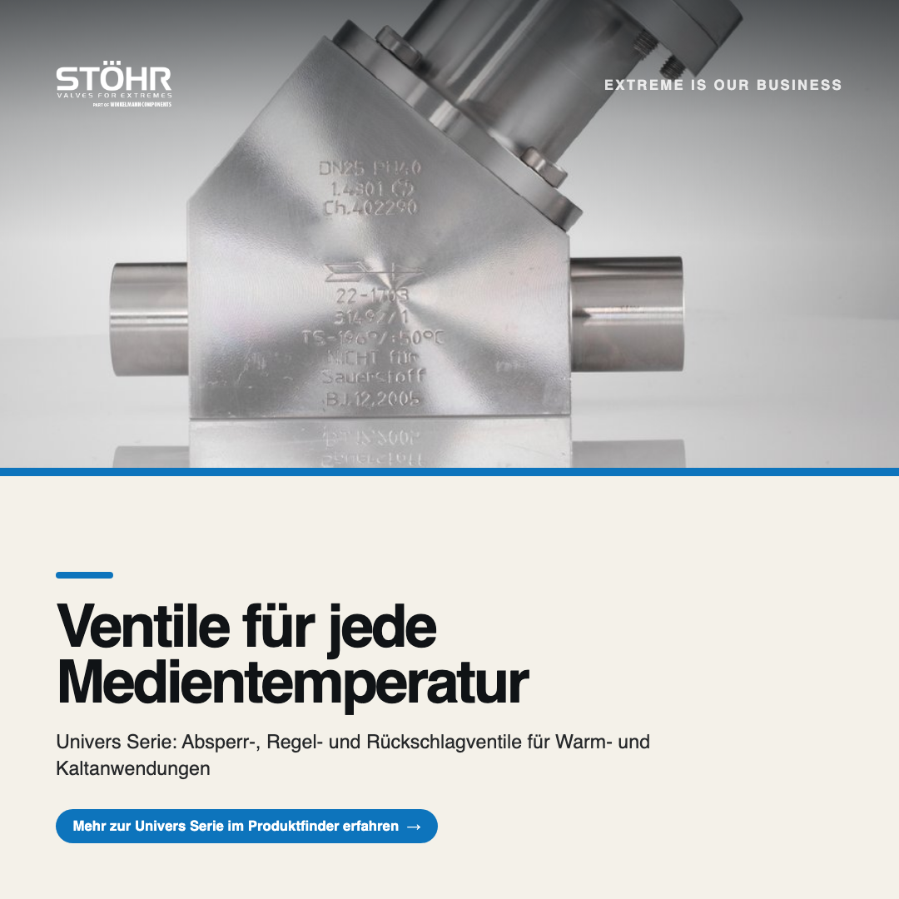
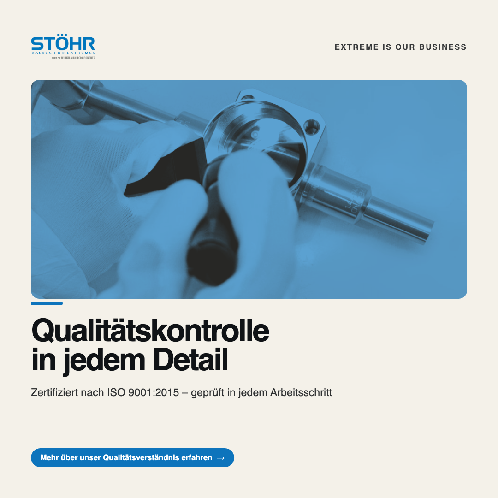
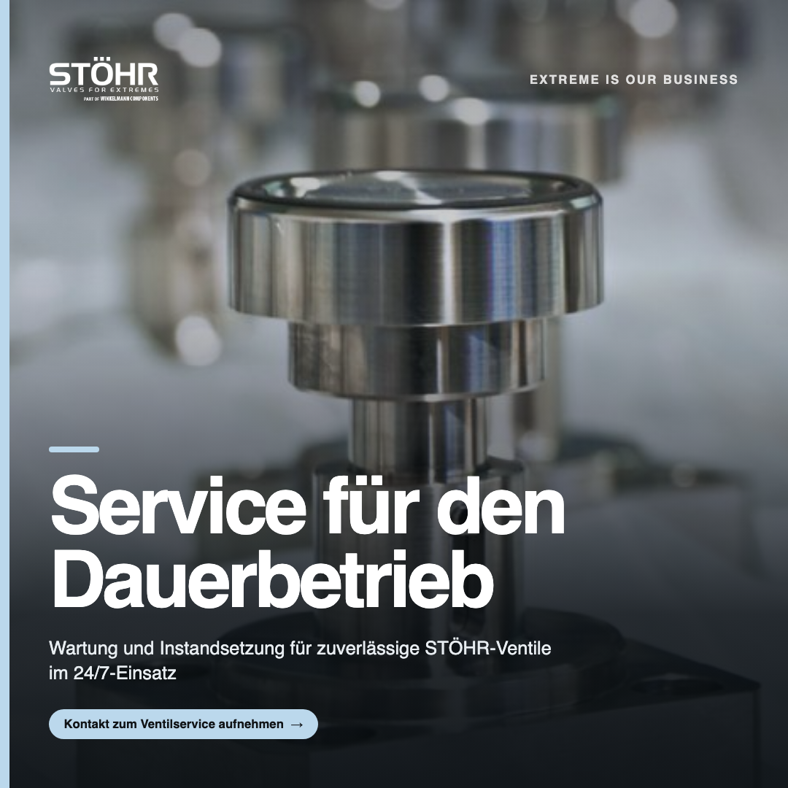

MARKETS
EDITION 07 · 2026
STÖHR
ARMATUREN
Ein Marketing-Fahrplan für STÖHR ARMATUREN: Fachkompetenz sichtbar machen und digitales Vertrauen bei internationalen Entscheidern aufbauen.
![STÖHR ARMATUREN]()
Wo STÖHR ARMATUREN
heute steht
Bestandsaufnahme von Marke, Kanälen und bisheriger Kommunikation — ehrlich und ohne Schönfärberei.
Wo STÖHR ARMATUREN heute steht
Stärken treffen Chancen
- —Seit 1938 spezialisiert auf Ventiltechnik für extreme Anforderungen
- —Faltenbalgabdichtung mit höchster Dichtheit (1x10E-8 mbar*l/sec)
- —ISO 9001:2015 zertifiziert, Fertigung aus Vollmaterial statt Gussteilen
- —Teil der Business Unit Flow Forming Technology der Winkelmann-Gruppe
- —Keine Meta-Descriptions auf allen sechs geprüften Seiten
- —Kein Social-Media-Profil von der Website aus verlinkt
- —Nur 3 % der 178 Bilder besitzen Alt-Texte
- —Schema.org-, Canonical- und OG-Tags fehlen komplett
- —Fachautorität auf LinkedIn kann Vertrauen bei Entscheidern stärken
- —Strukturierte Daten können KI-gestützte Suchsysteme besser erschließen
- —Visuelle Produktinhalte können Nähe zur Zielgruppe schaffen
- —Zugehörigkeit zur Winkelmann-Gruppe kann Reputation und Recruiting stärken
- —Risiko, dass Wettbewerber mit besserer SEO-Präsenz Anfragen abziehen
- —Risiko, dass Fachpublikum ohne sichtbare Kanäle abwandert
- —Risiko, dass fehlende KI-Sichtbarkeit künftige Reichweite kostet
- —Risiko, dass internationale Zielgruppen ohne Snippets abspringen
Klare Ziele,
klare Kennzahlen
Vier priorisierte Ziele, abgeleitet aus dem Status quo — jedes mit Kennzahlen, an denen sich Erfolg messen lässt.
Vier Ziele, die aufeinander einzahlen
Fachwissen zu Kryo- und Ventiltechnik sichtbar machen, um Entscheider in Zielbranchen zu überzeugen.
Content entlang der Conversion-Kette gestalten, um Kontaktaufnahmen über Formular und E-Mail zu fördern.
Technische SEO-Basis wie Meta-Descriptions, Schema.org und Alt-Texte schließen, um Sichtbarkeit zu verbessern.
Regelmäßige Bespielung von LinkedIn, Instagram und Facebook aufbauen, um Fachpublikum dauerhaft zu erreichen.
Drei Kanäle,
klare Rollen
LinkedIn, Instagram und Facebook — jeder mit eigener Aufgabe, Zielgruppe und Tonalität, aber einer gemeinsamen Story.
Jeder Kanal mit eigener Aufgabe
Einmal produzieren, dreimal erzählen
Ein Fachbeitrag zur Faltenbalgabdichtung wird je Kanal angepasst: LinkedIn liefert technische Tiefe für Entscheider, Instagram zeigt die Präzision in Nahaufnahmen, Facebook vermittelt die Kernaussage kompakt für ein breiteres Publikum.
Detaillierte Erklärung der Faltenbalgabdichtung mit Kennwert 1x10E-8 mbar*l/sec für technische Entscheider.
Nahaufnahme der Faltenbalgabdichtung mit kurzer Bildunterschrift zur Dichtheit.
Kompakte Zusammenfassung: Warum die Faltenbalgabdichtung höchste Dichtheit garantiert.
Fünf Content-
Pillars
Ein System aus Themensäulen — damit jeder Beitrag ein Ziel hat und die Marke über Zeit ein klares Profil bekommt.
Fünf Säulen, ein Profil
Erklärungsbedürftige Ventiltechnik verständlich und vertrauensbildend vermitteln.
Das Leistungsspektrum entlang konkreter Nutzenversprechen erklären.
Qualitätsversprechen mit belegbaren Zertifizierungen und Standards unterlegen.
Zugehörigkeit und Werte des Unternehmens nahbar vermitteln, ohne unbelegte Aussagen über Mitarbeitende zu treffen.
Nur belegte Zahlen und überprüfbare Meilensteine zur Glaubwürdigkeit nutzen.
Von der Säule zum Beitrag
Vom Plan
zum Beitrag
Ein konkreter Redaktionsplan über vier Wochen — mit realistischer Frequenz, Formatmix und ausgewogenen Contentschwerpunkten.
Redaktionsplan · Woche 1 & 2
Redaktionsplan · Woche 3 & 4
Zwölf Posts,
kein Copy-Paste
Vier Beiträge je Kanal — kanalgerecht in Tonalität, Format und CTA, als fertige KI-Motive im 4-Wochen-Kalender. Anschließend drei davon als Mockup im STÖHR ARMATUREN-Branding.
Zwölf Motive, ein Fahrplan

Fachwissen & Problemlösung
Ob Absperr-, Regel- oder Rückschlagventil: Die Univers Serie deckt mit unterschiedlichen Antriebsarten – manuell, pneumatisch oder elektrisch – ein breites Spektrum an Medientemperaturen und Druckbereichen ab. Für Warm- und Kaltanwendungen konzipiert, teils mit Vakuumisolierung ausgestattet, bietet die Baureihe Industrieunternehmen aus Gase-, Chemie-, Energie- und Kryotechnik eine verlässliche Basis für anspruchsvolle Prozesse. Als Hersteller mit Erfahrung seit 1938 entwickeln wir jede Ausführung für den jeweiligen Einsatzfall – ohne Kompromisse bei Präzision und Dichtheit. Erfahren Sie im Produktfinder, welche Variante der Univers Serie zu Ihrer Anwendung passt.
#Ventiltechnik #Kryotechnik #Industrieausrüstung


Vertrauen, Qualität & Verantwortung

stöhr_armaturen Jedes Ventil, das unser Werk verlässt, durchläuft strenge Qualitätskontrollen. Zertifiziert nach ISO 9001:2015 arbeiten wir in allen Bereichen qualitätsorientiert – von der Fertigung bis zur Endprüfung. So stellen wir sicher, dass unsere Armaturen den hohen Anforderungen von Gase-Industrie, Chemie und Forschung standhalten. Qualität ist bei uns kein Zusatz, sondern Grundlage jeder Entscheidung.

Leistungen & Kundennutzen
Armaturen im 24/7-Dauerbetrieb sind hohen Belastungen ausgesetzt. Mit unserem Ventilservice unterstützen wir Betreiber von STÖHR-Ventilen dabei, die Lebensdauer ihrer Armaturen zu verlängern und den Betrieb dauerhaft sicherzustellen. Ob Wartung, Instandsetzung oder technische Beratung – wir stehen an der Seite unserer Kunden, damit Prozesse reibungslos weiterlaufen. Sprechen Sie uns an, wenn Sie Unterstützung für Ihre Anlagen benötigen.

Von der Idee
zur Umsetzung
Was wir empfehlen — und wie eine Zusammenarbeit konkret abläuft, Schritt für Schritt.
Vier Empfehlungen auf den Punkt
Fachautorität durch regelmäßige, technisch fundierte Beiträge aufbauen und gezielt Entscheider in den Zielbranchen ansprechen.
Meta-Descriptions, Schema.org-Auszeichnung und Alt-Texte ergänzen, damit Suchmaschinen und KI-Systeme die Fachkompetenz erfassen können.
Instagram und Facebook regelmäßig mit Produktnahaufnahmen und Unternehmensnews bespielen, um Reichweite und Nähe zu schaffen.
Zertifizierungen, Firmenhistorie und Zugehörigkeit zur Winkelmann-Gruppe gezielt in Content-Serien einbinden, um Glaubwürdigkeit zu stärken.
So arbeiten wir zusammen
Ziele, Tonalität und Themen gemeinsam schärfen.
Monatlicher Contentplan je Kanal und Pillar.
Text, Grafik & Video — im Branding des Kunden.
Kurze Freigabeschleife — Sie behalten die Kontrolle.
Ausspielung, Monitoring und Antworten.
Kennzahlen auswerten — und zurück zu Schritt 1.
Was Umsetzung kostet
Marketingkonzept, 9 Posts, Flyer, Print-Vorlagen, Visitenkarten, private Landingpage & SEO/GEO-Check — in 24 h.
Sprechen wir über
Ihre Sichtbarkeit.
Ein unverbindliches Erstgespräch genügt, um zu sehen, was für STÖHR ARMATUREN realistisch drin ist. Ich freue mich darauf.
MARKETS
![QR-Code]()